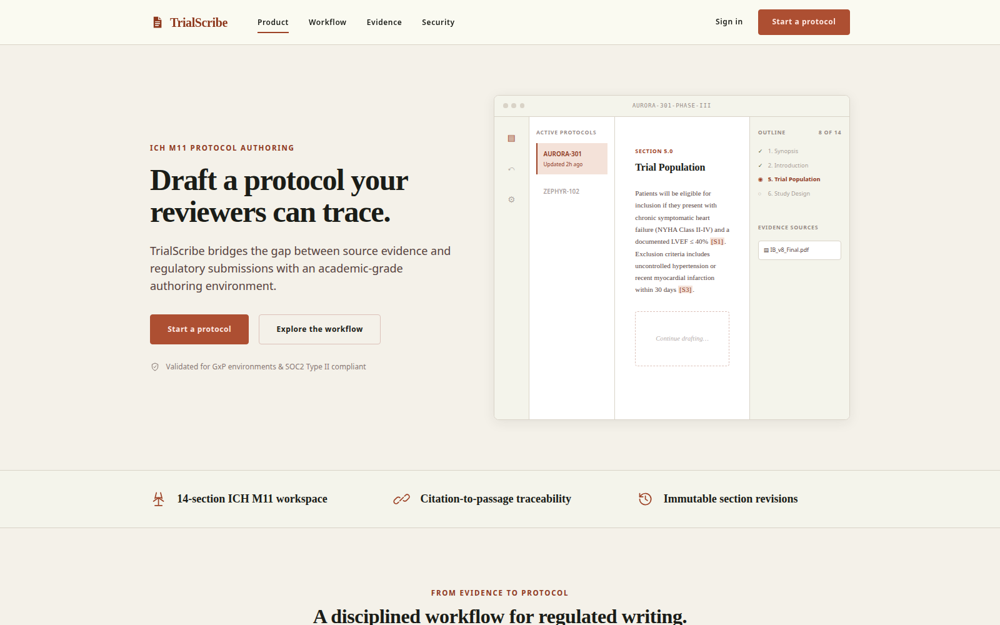
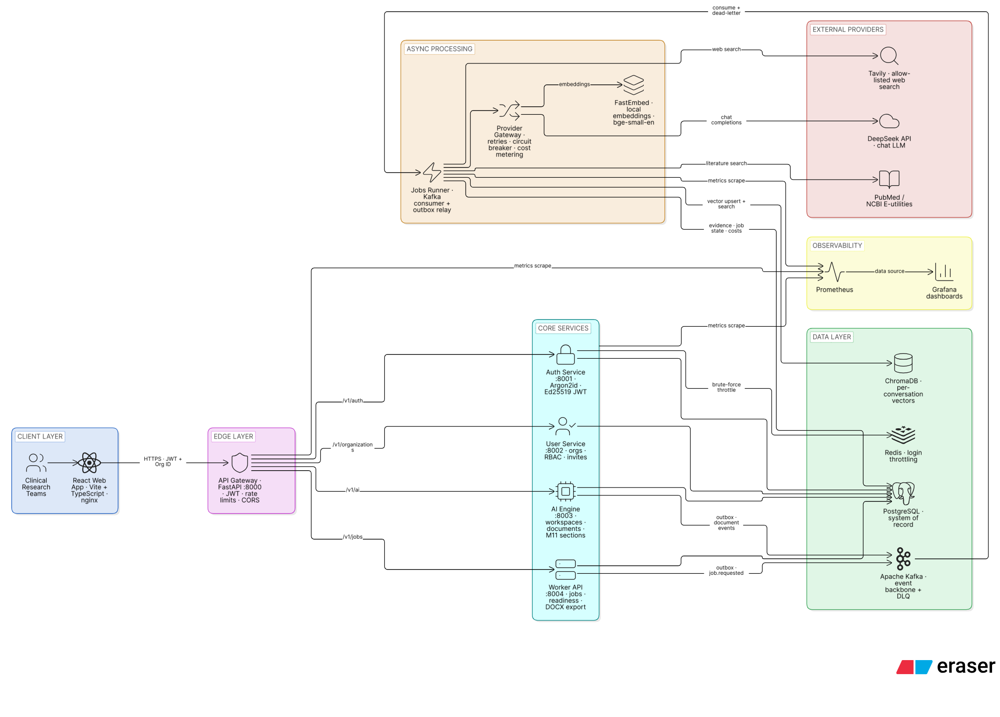

Engineering documentation
How TrialScribe drafts citation-backed clinical trial protocols
TrialScribe is a production-grade, multi-tenant SaaS platform that helps clinical research teams draft ICH M11–compliant protocol sections directly from trial data, uploaded source documents, and external literature. Every AI-drafted claim is grounded in a traceable citation — an uploaded passage, a PubMed result, or a vetted web source — rather than an unverifiable model assertion.

At a glance
A service-oriented platform, not a single AI wrapper
A React/TypeScript authoring workspace sits behind a FastAPI API gateway, which routes to five independently deployable backend services connected through an Apache Kafka event backbone. Retrieval-Augmented Generation grounds every generated section in traceable source passages.
System architecture
Request flow, end to end
The authoring workspace calls the API gateway, which authenticates and routes to the backend service mesh. Services coordinate long-running work over the Kafka event backbone, persist tenant-scoped state in PostgreSQL/pgvector and ChromaDB, and reach external LLM (DeepSeek, OpenAI) and research (PubMed, allow-listed web) providers only from the worker boundary.

Stack
Tech stack
| Layer | Technologies |
|---|---|
| Frontend | React, TypeScript, Vite |
| Backend | Python, FastAPI, async SQLAlchemy, Alembic |
| Data & retrieval | PostgreSQL, pgvector, ChromaDB, Redis |
| Messaging | Apache Kafka (event-driven service backbone) |
| AI / RAG | Retrieval-Augmented Generation, OpenAI (embeddings), DeepSeek (chat & reasoning) |
| Infrastructure | Docker, Docker Compose, Prometheus, Grafana, k6 |
Explore
Guides & service deep dives
Everything below is rendered from the repository's reference documentation, so you can read the platform's design and operating model without cloning the code.
Guides
Design & roadmap
Architecture
The LangGraph planner → researcher → writer pipeline, the v1 production topology, and where the platform is headed.
Capacity validation
Stress Test Report
Spike/soak results, resource ceilings, and a real ingestion capacity ceiling found and documented — with exact reproduction commands.
Operator handbook
Operations
Start, backup, restore, upgrade, rollback, and load-test the Docker Compose release stack.
Local setup
Setup & commands
Install prerequisites, bring up local infrastructure, and every scripts.sh command that runs, tests, and releases the platform.
Services
Service deep dive
API Gateway
The single public door to the backend: JWT verification, organization headers, request IDs, and safe error contracts.
Service deep dive
Authentication
Accounts, Argon2id passwords, Ed25519 access tokens, refresh rotation, CSRF protection, and login throttling.
Service deep dive
Organizations & RBAC
Owner/admin/member roles, one-time invitation links, and permission checks on every protected request.
Service deep dive
Conversation Workspaces
Durable AI conversation memory, collaborator access, archiving, and cursor-based pagination.
Service deep dive
Worker Service
Background jobs, RAG indexing and retrieval, web research evidence, and citation-backed section generation.